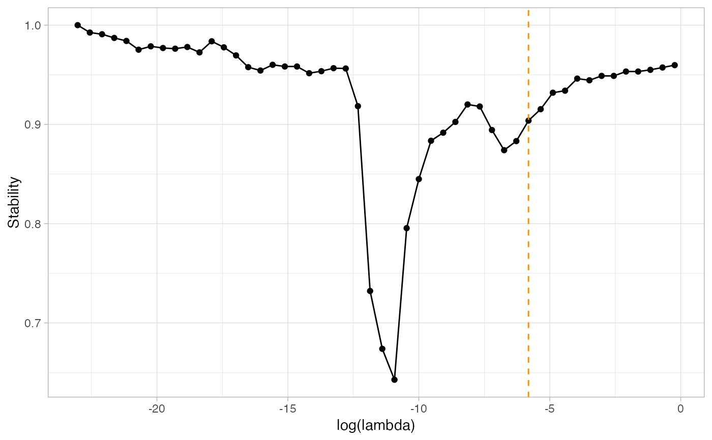

StATS.RdStability Approach to Threshold Selection
StATS(Pmat, nlambda = 100, stab.thresh = 0.9, plot = FALSE)
| Pmat | Pmat output from the ResampleEmtree() function |
|---|---|
| nlambda | Number of probability thresholds to look at |
| stab.thresh | Stability threshold |
| plot | Optional graphic output |
a list containing
freqs_opt: A tibble with (number of possible edges) x nlambda rows, containing the computed selection frequency of each edge and stability measure for each threshold.
lambda_opt: The probability threshold giving the desired stability of frequencies.
plot: The optional graphic output.
n=100 p=15 S=15 set.seed(2021) simu=data_from_scratch("erdos",p=p,n=n) G=1*(simu$omega!=0) ; diag(G) = 0 #With default evaluation, using the PLNmodel paradigm: default_resample=ResampleEMtree(simu$data, S=S, cores = 1)#> Computing 15 probability matrices with 1 core(s)... #> Convergence took 0.25 secs and 30 iterations. #> Convergence took 0.18 secs and 21 iterations. #> Convergence took 0.27 secs and 30 iterations. #> Convergence took 0.22 secs and 30 iterations. #> Convergence took 0.16 secs and 18 iterations. #> Convergence took 0.21 secs and 30 iterations. #> Convergence took 0.2 secs and 30 iterations. #> Convergence took 0.19 secs and 30 iterations. #> Convergence took 0.21 secs and 30 iterations. #> Convergence took 0.2 secs and 30 iterations. #> Convergence took 0.14 secs and 15 iterations. #> Convergence took 0.16 secs and 30 iterations. #> Convergence took 0.22 secs and 30 iterations. #> Convergence took 0.2 secs and 30 iterations. #> Convergence took 0.15 secs and 23 iterations.3.08 secsstab_selection=StATS(default_resample$Pmat, nlambda=50, stab.thresh=0.9,plot=TRUE)#> truth #> pred 0 1 #> 0 91 2 #> 1 0 12